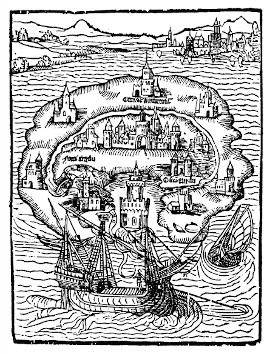

¿Puede haber un Estado justo que permita que todos vivan felices y bien
atendidos? Esta pregunta inquietaba a Tomás Moro.
Vivía en la Inglaterra del siglo XVI, en la época del
Renacimiento, la Reforma y las guerras de religión, en la que las noticias
de las zonas del mundo recién descubiertas constantemente llegaban a Europa.
En este contexto surge Utopía. La obra es un recuento de un viaje
supuestamente verdadero de
un navegante que afirma haber visto un Estado ideal en una isla
en algún lugar más allá del ecuador.
Moro discute con él: ¿debe haber propiedad privada? ¿Es buena la igualdad
social? ¿Puede una sociedad generar suficientes bienes si nadie ambiciona
obtener ganancias? ¿Hay un jefe de Estado bueno y justo que no urda guerras
por intereses personales ni exprima a sus súbditos?

Imagen de la primera edición.
El nombre original de la obra era:
"Librillo verdaderamente dorado, no menos beneficioso que
entretenido, sobre el mejor estado de una república y sobre la
nueva isla de Utopía"
Las preguntas muestran que la Utopía de Moro es asombrosamente
moderna. De hecho, muchas de las ideas son prematuramente socialistas, incluso
comunistas, 300 años antes de Karl Marx. Y se sigue discutiendo si la
propiedad privada es una suerte o una desgracia para la sociedad. Otro de
los méritos del texto es que creó el género literario de la utopía.